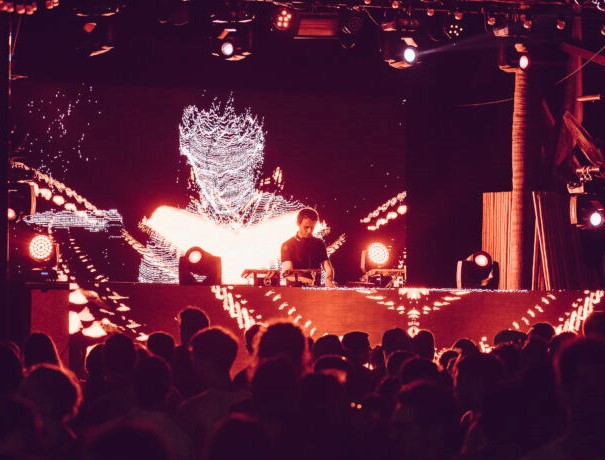

10 de agosto: Taller de visuales en Touchdesigner por Luciano Toledo (Tolch)
El objetivo del grupo es equipar a los participantes con los conocimientos fundamentales para sumergirse en un entorno de programación visual, podrá crear su propio material artístico y proyectos interactivos multimedia.
Obtendrá conocimiento del programa Touchdesigner a través de ejemplos prácticos, para desarrollar una práctica grupal de la técnica y poder incluirla en sus proyectos profesionales.
Se compartirá pantalla con los participantes, para que puedan ver paso a paso cómo generar contenido visual desde cero.
Dirigido a artistas visuales, Grafistas 2D/3D, programadores músicos y toda persona interesada en el programación visual y gráfica generativa en tiempo real y entornos interactivos.
Requisitos:
- Una computadora
- Touchdesigner instalado link aqui: https://derivative.ca/download Si no hay una licencia presente, se abrirá Key Manager Dialogo necesario para activar el programa.
Este taller está dirigido a personas interesadas en el audio y la producción musical, con o sin conocimientos previos en cuanto a teoría musical. También está dirigido a personas afanadas a los sintetizadores y el audio gear.
- Inscripciones abiertas:
- hasta el 31 de julio 2022
- link de inscripción:
- https://forms.gle/qnbBYUeUxWmkaZ4X9
- Fechas del taller:
- 10 de agosto 2022
- Horario:
- 5:00 a 7:00 pm
- Cupo:
- abierto a 30 personas que seran notificados por email
Taller gratuito online via plataforma Jitsi
Tallerista: Luciano Toledo a.k.a Tolch - Artista audiovisual, nacido en Buenos Aires, en búsqueda constante de explorar nuevas posibilidades en el desarrollo de arte digital, atravesando áreas como la interactividad, machine learning y sistemas audiovisuales reactivos. Actualmente estoy creando material de aprendizaje para la comunidad latina de Touchdesigner, a través de tutoriales en http://qualia.social , donde explico varias técnicas y conocimientos paso a paso.